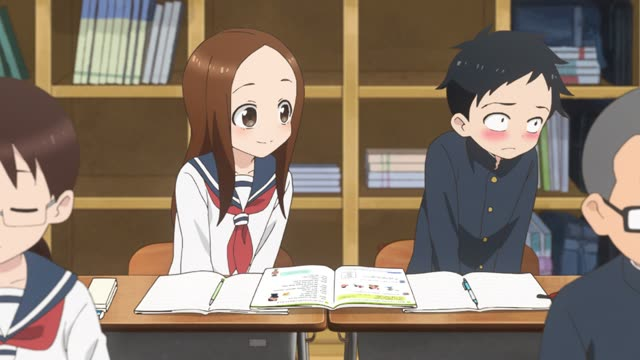
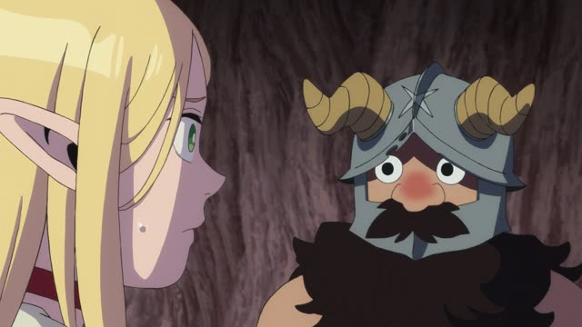
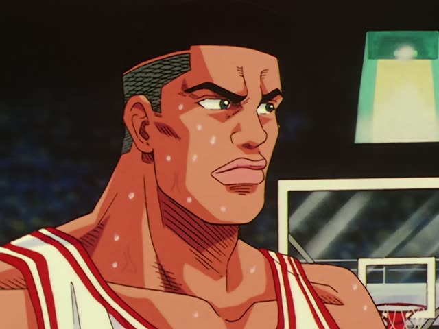
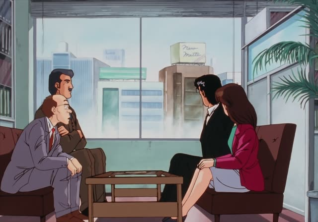
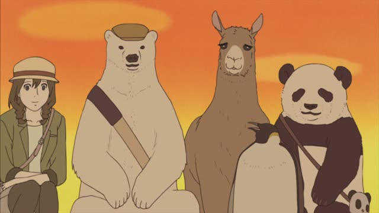
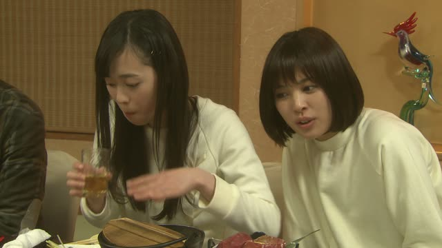
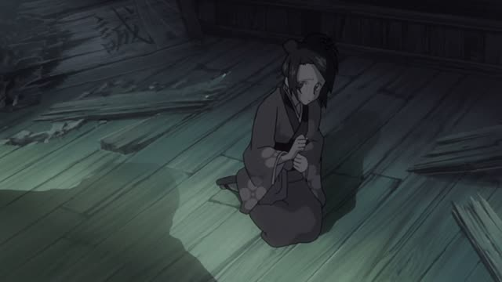
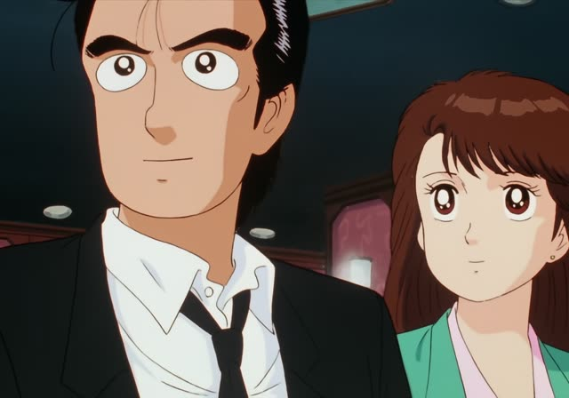

～がる
| Polite | ～がります・～がっています |
|---|---|
| Casual | ～がる・～がってる |
Same meaning: "(someone else) shows signs of feeling". Only the politeness changes.
Kekkon Dekinai Otoko · Episode 1
私は医者です。恥ずかしがることないんですよ。
"I'm a doctor. There's no need to be shy."
～がる is for other people's feelings: you see the signs. Feelings like 恥ずかしい, 怖い, 欲しい are inside a person, so for someone else you drop い and add がる: 恥ずかしがる, 怖がる, 欲しがる.
On this card, the doctor tells her patient not to be embarrassed. んですよ makes it polite.
It's often in the ている form: 怖がっている, "he's scared (you can tell)".

Teasing Master Takagi-san · Season 2, Episode 1
なんか、西片、恥ずかしがってる？
"Nishikata, are you getting shy?"
On this card, Takagi teases Nishikata. She can see it on his face: 恥ずかしがってる.
Quick Examples
Your dog during a storm.
犬が雷を怖がってる。
"The dog is scared of the thunder."
CasualA parent talks about their kid.
息子が新しいゲームを欲しがっています。
"My son wants a new game."
For yourself: 欲しい. For others: 欲しがる.
PoliteYour friend lost the match.
田中さん、すごく悔しがってたよ。
"Tanaka was really frustrated."
CasualAbout a cat.
猫はお風呂を嫌がります。
"Cats hate baths."
PoliteWith and without
私は怖い。
"I'm scared." My own feeling.
弟が怖がっている。
"My brother is scared." I can see it.
Examples from Media
Kekkon Dekinai Otoko · Episode 5
特に奥さまが残念がってくださってね。
"His wife in particular was really disappointed."

Dungeon Meshi · Episode 2
それは体が脂を欲しがっているせいだ。
"That's because your body is craving fat."

Slam Dunk · Episode 45
ファウルを怖がってるな。
"He's scared of fouling."

Oishinbo · Episode 2
そこまで嫌がるのは、ただ事じゃないよ。
"If he hates it that much, something's up."

Shirokuma Cafe · Episode 49
埋蔵金だったら、糸井さんが悔しがると思うな。
"If it's buried treasure, Itoi will be so jealous."

Good Morning Call · Episode 14
菜緒がすっごく欲しがってた絵馬が
"The prayer tablet Nao really wanted"

Samurai Champloo · Episode 2
怖がるな。
"Don't be scared."

Oishinbo · Episode 45
ほんどにうれしがったです。
"They were really happy."
Tohoku dialect: ほんど = ほんと.